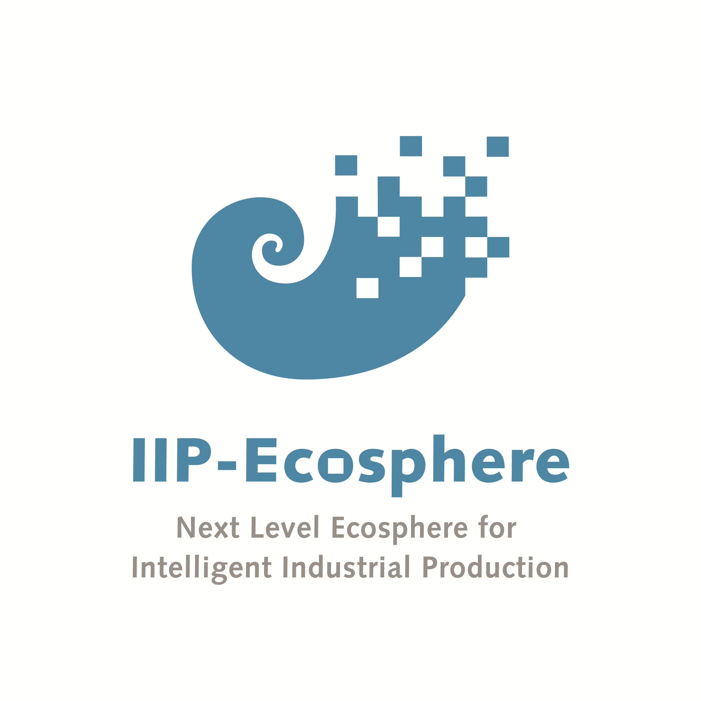

<mat-toolbar style="background: RGB(35, 142, 183);">
  
  <span>  IIP Ecosphere Management UI</span>
</mat-toolbar>

<nav mat-tab-nav-bar style="background: RGB(35, 142, 183);">
  <a mat-tab-link [routerLink]="'resources'"> resources </a>
  <a mat-tab-link [routerLink]="'containers'"> containers </a>
  <a mat-tab-link [routerLink]="'services'"> services </a>
  <a mat-tab-link [routerLink]="'connectorTypes'"> connector types </a>
</nav>
<mat-tab-nav-panel>
  <router-outlet></router-outlet>
</mat-tab-nav-panel>
